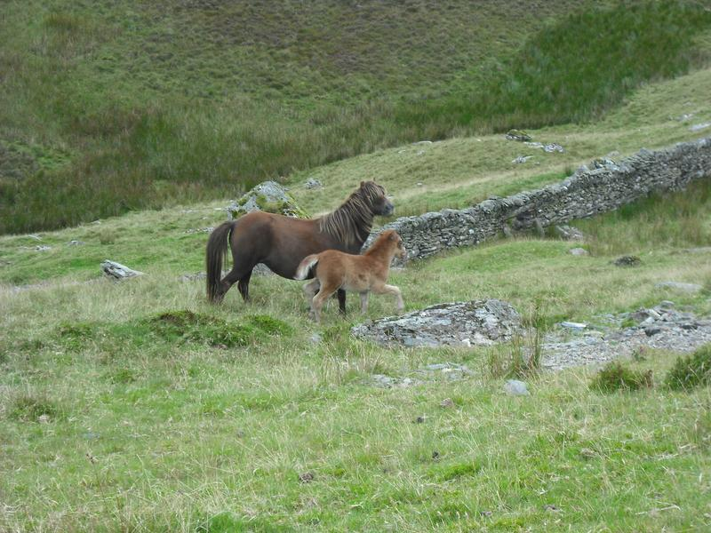
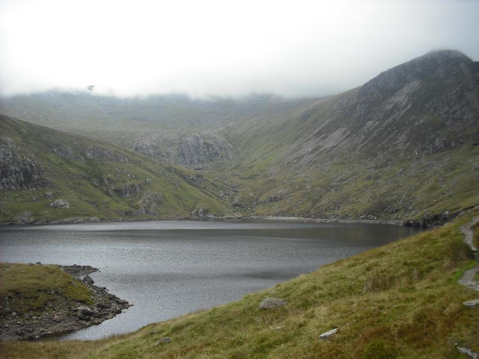
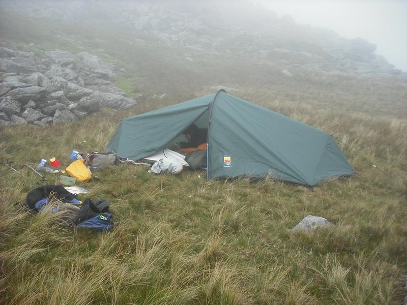
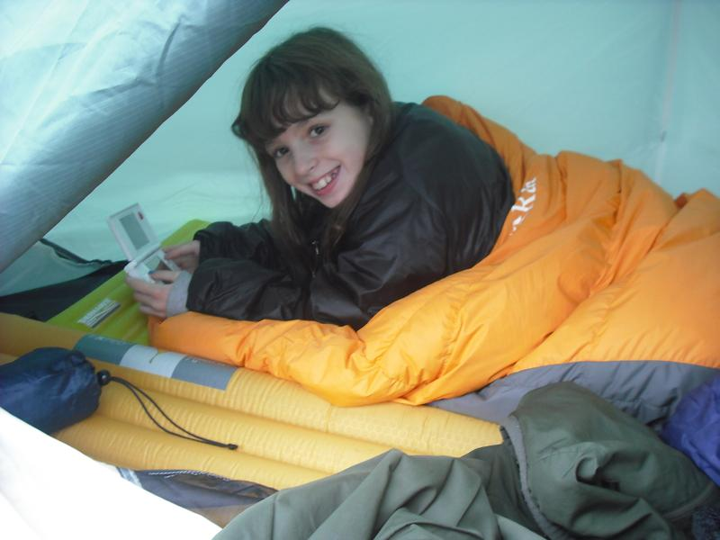
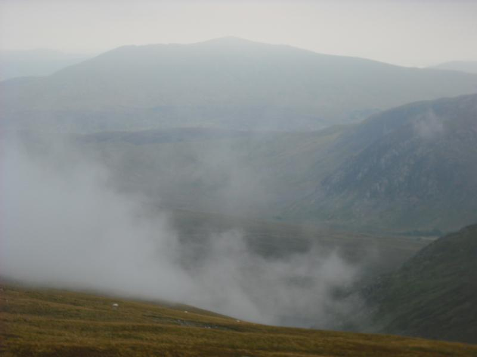
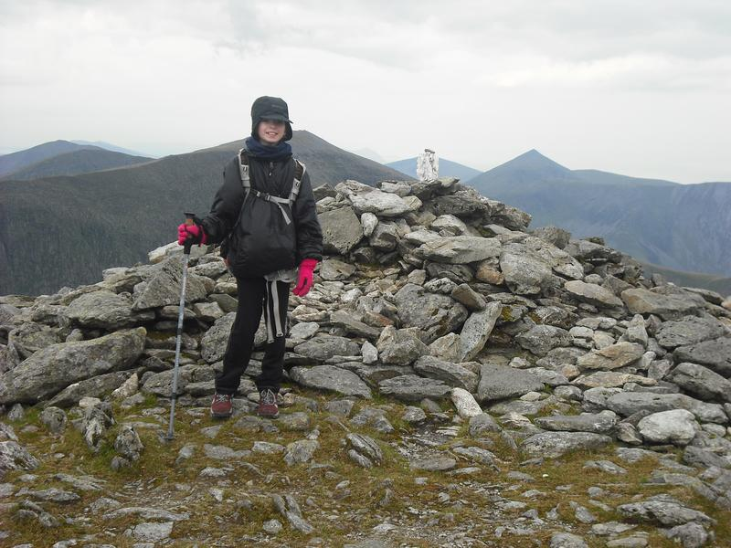
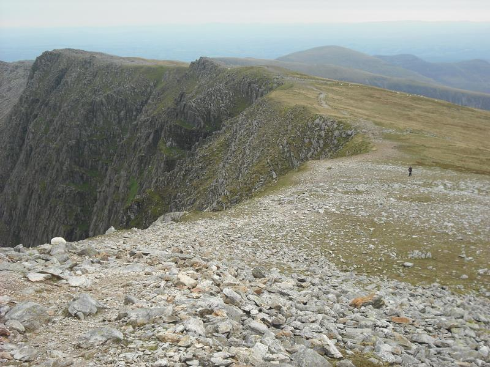
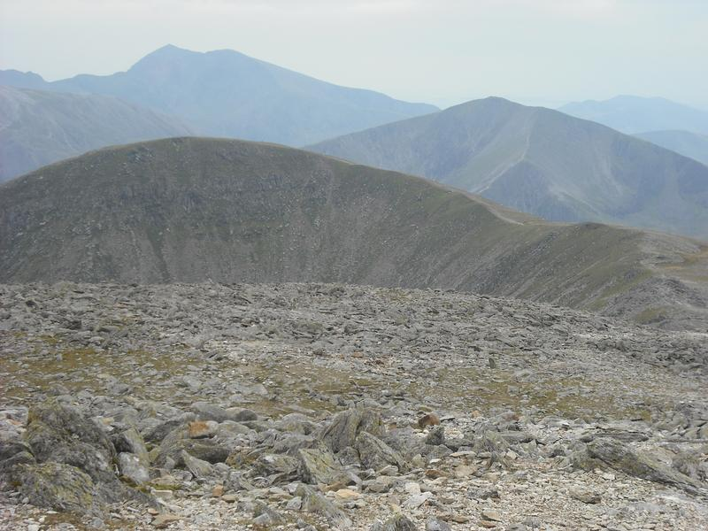

Carneddeau Summit Camp
After another summer of indifferent weather, following the hot spring, the Snowdonia weather forecast was predicting a couple of days of cloud free summits. Not deterred by our very windy camp on the summit of Moel Siabod, Ella was keen to go on another summit camp.
Wild ponies
{kind=link}
The plan was to climb Carnedd Llewelyn via the road up to Fyffon Lllugwy and traversing Craig yr Ysfa, camping on or near to the summit. On day two we would traverse the ridge to Pen yr Ole Wen and descend the South East ridge back to the valley.
Ffynnon Llugwy
{kind=link}
We arrived at Capel Curig at lunch time and went into the Pinnacle Cafe to eat and fortify ourselves for the haul up to the summit. Driving round towards Ogwen after lunch it was apparent that the MWIS forecast was wrong, as the main Carneddeau ridge was covered in cloud. Hoping that the tops would clear later on and that the forecast for clear tops tomorrow would be correct, we decided to proceed with our plan.
Zephyros on C. Llewelyn
{kind=link}
I had planned to leave the car at one of the two camp sites in the valley, as I was a bit concerned that leaving the car on the A5 overnight might lead to the mountain rescue being called out. However, whilst both camp sites are happy for you to park your car there during the day, for a small fee, neither of them will allow overnight parking unless you are camping there. So, I ended up leaving the car on the hard shoulder just down the road from Gwern y Gof Uchaf, which was almost opposite to the path down from the SE ridge of Pen yr Ole Wen.
I packed almost all the gear into my POD Black Ice, leaving Ella to carry just her sleeping bag and the two camping mats in my Osprey Talon 33. The Osprey was miles too big for her, but she insisted on using it and since she was carrying very little weight I thought she would be OK.
We set off back along the old A5 and emerged almost opposite the start of the road up to Fyffon Llugwy. This is quite a steep sloge and I am sure that the road has got longer since the last time I walked up it! However, the tedium was relieved by watching a wild pony and its foal near to the track. When we arrived at the reservoir the cloud had descended even further and was just brushing Bwlch Eryl Farchog. As there is no water up on the summit plateau, I filled up our three one litre Platypus bottles from the reservoir.
After a short rest, we made our way back to the path that leads up towards Bwlch Eryl Farchog. I remember this path as being very eroded the last time I cam this way, which was probably in the early 1990's. However, it looks as though quite a bit of work has been done on the lower section and it's only the steep final section which is unpleasant to climb. Ella seemed tired, so when I reached Bwlch Eryl Farchog I dumped my rucksack and descended about half way to carry her sack for her.
From the col we set out to scramble up Craig yr Ysfa. A runner with a dog passed us. When he reached the short scrambling section the dog decided it didn't want to climb and had to be manhandled up the short rocky step. We were now surrounded by swirling mist and rather than climb all the way up to the summit of Carnedd Llewelyn I decided to camp on the grassy shelf a couple of hundred feet below the summit, where I had stayed on my last trip. Luckily I had saved the location as a waypoint in my eTrex, which made locating it much easier in the mist. The nearby cairn, overlooking Cwm Eigau, which I remember being huge, turned out to be just a small pile of rock.
Ella in the tent
{kind=link}
Moel Siabod appears from the mist
{kind=link}
It was only about 5:00pm when I set up the tent. Although it was very misty, there was no breeze, so I was able to cook in the open on the rocks just behind the tent. After we had eaten we settled down in the tent for a snooze. Around 7:00pm I unzipped the flysheet just as the clouds around us started to disperse. We clambered out of the tent and soon we could see all the surrounding tops. A small patch of cloud was flowing over the summit of Pen hyr Helgi Ddu below us. It was as if someone was pouring a thick white liquid over the summit. However, once the cloud had flowed over the summit, it dispersed into nothing. We spent some time wandering around admiring the views. I pointed out tomorrow's route to Ella, so she could see that there was only a small amount of ascent with most of the day being a traverse over the summits. We tuned in finally just before it got dark around 9:00pm.
Ella on the summit of Carnedd Llewelyn
{kind=link}
Unlike our trip up Moel Siabod we slept well and it was after 6:00am when I woke up. Looking out of the tent I could see most of the sky was clouded over, but it was well above the summits. After a breakfast of hot cereal start and hot chocolate, we packed the tent away and started up the ridge towards the summit of Carnedd Llewelyn. After a brief pause on the summit we started descending towards Bwlch Cyfryw drum. As we began the descent we were exposed to a strong south westerly wind, which was to buffet us all along the ridge. We made our way over the Black Ladders and up to the summit of Carnedd Dafydd, where we sheltered in one of the many stone shelters. After a brief rest we dropped down a short way before the ascent to the final summit of Pen yr Ole Wen, where we saw the first person of the day.
The Black Ladders
{kind=link}
Pen yr Ole Wen and Snowdon
{kind=link}
Once we had crossed the summit we were sheltered from the wind as we wound our way down the south east ridge. We scrambled down the final section which lead to some boggy ground at the entrance to Cwm Lloer. I was wearing my Inov8's, so had to perform a few jumps between stones to avoid getting wet feet. Since our last trip up Moel Siabod, where Ella's boots had let in water like sieves, we had bought her some new Hi-Tec boots. Her new boots performed well, being both comfortable and waterproof. We followed the path down next to the stream passing the MAM hut at Glan Dena. We stopped to chat with a couple of MAM members who were busy filling in holes in the track up to the hut.
After short walk along the road, we arrived back at the car. I chucked all the gear into the back and we set off to Pete's Eats for an early lunch.
I had worn my Inov-8 Roclite 295 shoes for the walk. I wasn't sure how they would perform as I was carrying a heavy sack over steep and rocky terrain. In the event they were really comfortable and I was able to scramble up and down steep ground while carrying a heavy sack with no problems. Ella's new Hi-Tec boots were comfy and waterproof. I was pleased that we had reasonable conditions for the walk. Although Ella found the wind a bit of a problem, it was nothing like as bad as on our Moel Siabod trip. The low cloud of the previous day had cleared in the evening and we had enjoyed great views from the tent and during our walk along the ridge.